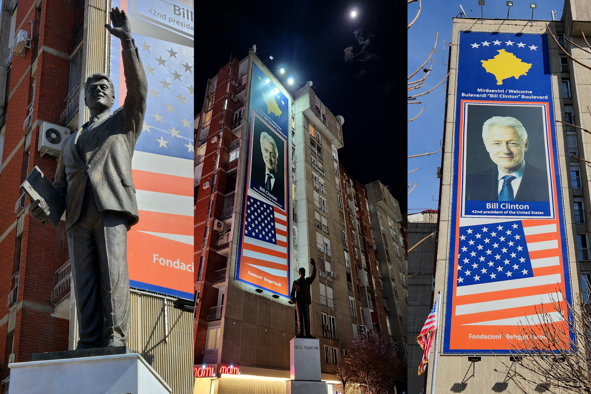
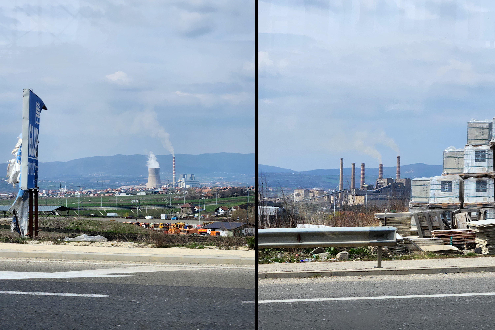

A bipolar exploration of Kosovo
The reasoning behind my visit to Kosovo is admittedly rather vague. There have been many times in life where I have been bestowed with a small sum of money of which I can do as I please, and nearly every time the same situation and questions arise - Can I go on holiday with this amount? Where can I go? Where's Interesting? Both my family and associates alike seem to avoid me when they know this scenario is on the horizon, they'll be met with countless messages and calls asking for opinions, looking at maps and travel guides, I don't blame them because it infuriates me, and I'm meant to be the one going on holiday and enjoying myself, so who knows what it's like on their end. Luckily the selection process for Kosovo was rather less painful than times previous, I was planning on a visit to Albania for a few days and then get a train to Pristina, but after discovering the somewhat abandoned railway network between the two was no longer operation, the considerably more active political situation in Kosovo made the decision, for once, rather simple.
I arranged this trip in my usual style, book a flight on fairly short notice and find a hotel that looks like it will provide basic necessities without (hopefully) losing my possession, limbs or dignity, and sort out the details once I arrive. I will omit the run-up to my arrival in Kosovo as it serves as fairly bland reading, however, the few who had heard of my plans engaged me in fairly stark conversations filled with facts from the UK Foreign, Commonwealth and Domestic Office (FCDO) website as well as, I'm sure, the usual suspects such as TripAdvisor and distant memories of the news in the late 1990's. As with most of the travel-based ventures I undertake, I knew to expect warnings but these were of a severity and frequency like never before, even more surprising considering some of the questionable destinations of my previous explorations.
These warnings included:
- A risk of terrorism, especially to British nationals.
- A risk of attack in places visited by foreigners, public gatherings, cultural events, religious sites and churches.
- I must avoid all travel to most of the northern municipalities as well as the northern part of Mitrovica.
- I will be under threat from Organised Crime, armed violence and vehicle explosions.
- There could be airstrikes, it won't be safe to go out at night and I must only take cash as ATMs will not work
- There is a threat from unexploded ordinance from the 1999 conflict, as well as swathes landmines along the entirety of the border with Albania, parts of central Kosovo, and any mountains between Kosovo, Albania and Montenegro.
- There is a security threat if my ID isn't carried (and copied elsewhere) during the entirety of the stay and I would have to make sure not to take pictures of anything secure, police-based, military or official.
- If driving or in a vehicle at any point during my stay, I'd have to consider the poor road conditions, risk of landslide and flooding, as well as fuel quality, not to mention being advised not to be in a vehicle at night where possible.
- I must take an appropriate amount of food and water if I plan on crossing a border.
- I must beware if I hire a vehicle as Serbian registered vehicles are being attacked in Kosovo.
- There is a risk of forest fire, Kosovo is in a particularly active seismic zone, and finally I needed to make sure I was vigilant towards flooding and landslides, particularly in hilly and mountainous regions.

Despite this plethora of negativity, warnings and concern, I journeyed on with what can safely be described as a preconceived notion of Kosovo and its surrounding areas. After around two and a half hours of a balkan-looking hooligan purportedly elbowing me in the ribs before being moved away from his €40 'extra legroom' seat, I landed in a pitch-black, very much unassuming airport.
I had arrived in the place that, if the reports and advice above were anything to go by, would inevitably end my life well before the scheduled return flight home a week later.
Whilst I won't necessarily be giving a detailed account of my time in Pristina, I did learn a lot about both the people and the region. My first evening there revolved around a short walk around the city, hiding my possessions and looking at my feet as to not arouse suspicions from the terrorists or gangsters that was per my prior warnings, almost certainly going to rob, attack or bomb me on-sight. Thankfully it took no more than 5 minutes of walking around Pristina to see that it was fairly well maintained, WiFi appeared to be prevalent, and the workers in the 24hr 'Spar' supermarket were rather chatty, wondering where I'd come from and why. This theme continued over the next few days, the place that I had been warned was bordering on anarchy, an ex-warzone that still contained as much jeopardy as the late 1990's with terrorists and gangsters roaming free, turned out to be a friendly, sun-bathed, almost Mediterranean feeling gem in the Balkans.
Much to the puzzlement of those around me there were only two main goals of this trip, both with particularly political themes. Firstly, I wished to view the infamous Bill Clinton statue and poster in the centre of Pristina. Thanks to his significant involvement in representation of Kosovo within Yugoslavia, including the independence movement of Kosovo in the 1990s, he has come to be viewed as somewhat of a hero in Kosovo - an odd spectacle I must say, It's rare you see the US government involve themselves in foreign conflicts and come out looking like the 'good guy', especially given their questionable 'humanitarian' efforts of the 1990s and 2000s. I booked a taxi to a street aptly named 'Bill Clinton Boulevard' on an app called 'Tesla Taxi' and although this may not come as a surprise to most, given the name of the app, a roughly $90,000 Tesla Model X arrived. Again if I were to be hailing this taxi in Los Angeles I may have taken this in my stride, but given the previous warnings of losing my legs to stray landmines and multiple landslides, this luxurious vehicle, a comfortable, sun-kissed 25 degrees celsius and incredibly welcoming locals couldn't have been more of an antonym of the Kosovo I was being prepared for.
I couldn't and still can't decide how I feel about this statue and poster combination, on the one hand I was stood on the corner of a gridlocked highway staring at a rather average-sized statue of the 77yr old, 42nd president of the United States. The locals seemed very used to it and I appeared to be the only tourist interested, hence why my photography below screams "amateur with a smartphone trying not to stand out in a crowd of locals", however, I feel I achieved my goal of delivering context for how I felt on the other hand. From miles around you could drive around Kosovo, and if in the vague area, look over and see a 9, maybe 10 storey high-rise comprised of a fast food store and residential apartments, veiled in a 9, maybe 10 storey banner featuring a multi-storey photograph of Bill Clinton, the American flag and a silhouette of Kosovo, welcoming you to Bill Clinton Boulevard. How is one meant to react when standing in front of 1 of 3 Bill Clinton statues worldwide? I feel that as someone who has dedicated themselves to politics and international relations I should have had a more significant reaction, maybe I should have been happier, or perhaps feeling a sense of awe, but it just felt a little bit... strange. Either way, in a matter of an afternoon I had completed one of my two requirements from my visit to Kosovo, and although not exactly groundbreaking, it was an experience nonetheless.

Given that the advice given to me about Kosovo and my experience there so far had been bipolar, after two days of coming to realise that I was somewhere almost too comfortable, I decided to push myself and aim to complete the second of my requirements from this trip and travel to a town on the FCDO 'Do not travel' list, called Mitrovica. Mitrovica had been one of the motivations for visiting Kosovo, in my search for somewhere to go in Europe I like to consider where has the most 'active' political situation and if there is any remnants of that left to experience. From what I'd read previously, Mitrovica had been the epicentre for recent conflict in Kosovo and became the flashpoint for tensions in the past, now housing troops and officials from the UN, EU and KFOR in an attempt to quell unrest in the region. Other than this somewhat vague report of historic political unrest and increased number of troops I knew little about Mitrovica, a man in my hotel told me that I could get a shared taxi there, and of course my lack of planning and overconfidence felt that was all the info I needed, so the next morning I decided to request the infamous 'Tesla Taxi' to take me to the bus station.
I arrived at the bus station at around 10am, it feels strange saying this in retrospect but the process seemed very simple to me, again, there had been very little planning, so I simply walked up to a large group of taxi drivers huddled in a corner of the expanse of tarmac, and asked if it was possible to get a shared taxi to Mitrovica. I'm sure anyone who's traveled semi-regularly can accurately predict the next series of events, around 30 minutes of extremely broken english, a cameo from Google Translate and eventually a plethora of taxi drivers all growing increasingly annoyed I wasn't accepting their kind offer of €70 for a solo journey, rather than the much more modest €8 I had been advised the previous day.
Ironically, I would have thought that my decision to ditch the taxi idea and find the next coach to Mitrovica would have been simple, given that I was supposedly in a bus station, however, the steel-faced ladies at the information desk responded to my queries about locations and times of coaches with nothing more than an outstretched finger and "here". 45 minutes of wandering and querying the location of the Mitrovica bus with every driver I could find later, I found myself stood on the side of a 4 lane highway with a group of people, no signage and no real idea what I was doing.
20 minutes had passed when a coach arrived that had most definitely seen better days, I boarded with absolutely no idea of its destination, price or journey time, and sent a WhatsApp message to my mother informing her of my impending arrival into Mitrovica, or if the prior warnings were anything to go by, almost certain kidnap, robbing and quite possibly minor seismic activity.

After psyching myself up for the Kosovo of old and realising that it was much the opposite, I was happy I was finally engaging in what I would consider to be 'real' adventuring. I had seen what needed to be seen of Pristina and somewhat amazingly the thought of another day sat under the sun outside a youthful restaurant had become quite mundane, I wanted to see the 'real' Kosovo and this was my opportunity. Not much surprised me about the journey for a large portion, in general the further we travelled from Pristina the more used the buildings, roads and vehicles appeared, but in comparison to some of my previous ventures this still seemed relatively quite nice. The first thing to truly hit me was something I had noticed in Pristina, industry was an imposting feature on the Kosovan landscape. Almost from my first instance in the capital I had noticed a lingering haze and an near constant odour of wood smoke, I hadn't given it much thought until seeing a staggering number of industrial plants and power stations billowing noxious fumes onto what can only be described as quite a pleasant looking landscape (minus the abundance of aforementioned landmines and unexploded ordnance)

Luckily, after around 45 minutes of meandering through the countryside, a man who I thought was a passenger at the front of the coach stood up and started taking coins from the passengers. I started psyching myself up for the inevitable news that I was going to be asked for an exorbitant sum of money to be taken to meet my maker in the perpetually hazardous mountains on the Albanian and Montenegrin border, when in reality all that happened was I sat watching The Office for half an hour, and was then asked in almost perfect English if I was going to Mitrovica, and to pay €1.20, a pleasant surprise after my €70 taxi quote just a few hours earlier.
By the time we arrived in Mitrovica the bus was far beyond its advertised capacity. This added to the atmosphere when we pulled up on the side of the road and were herded out before the driver began driving off while the doors were still open. Nothing about the south side of Mitrovica took me by surprise initially, a standard town/city with a distinct Balkan feeling, however, I did hear the unmistakable sound of a call to prayer echoing through the city.
I had always known that Kosovo had a rather significant Islamic influence, especially considering Islam could be said to be at the forefront of the birth of Kosovo itself, however, even when there during Ramadan as I was, I doubt anyone would have been able to tell from first impressions. On the contrary to this feeling in Pristina, I walked around the corner after leaving the coach to find what must have been 500 or more people sat on the pavement, in the road, and up the stairs of the Isa Beg mosque. I stood and watched for a number of minutes before moving further into Mitrovica, I found it fascinating how the language, which I assume to be Arabic, changes and sounds so different depending on where it is being spoken.
I continued walking, following the natural flow of people around a corner to a road that disallowed access to vehicles. There was an eerie atmosphere as I walked further up the road, it seemed like until very recently this road was in use, but temporary barriers that had clearly become a permanent feature as well as police cars blocked the path. I had arrived at the 'New Bridge' that I had read about so many times previously. Very quickly it dawned on me that this bridge was blocked for a reason, with the distractions of the previous hours, I had forgotten the significance of this landmark. The New Bridge served as a symbol of ethnic division within Kosovo, over 75,000 Kosovo-Albanian Muslims lived on its south side, being separated by Italian Carabinieri troops and Kosovan police as part of The Kosovo Force (KFOR) from over 50,000 Serb-Kosovans and arguably the might of Serbian nationalism itself in the north.

There had been clashes between the Kosovans and the Serbians across a large portion of north Kosovo a few months prior to my arrival, which I knew before I arrived, however at first glance these tensions weren't showing. I had read that the 'New Bridge' had military checkpoints, that I would need documents to pass, and may even be subject to searches or questioning when attempting to cross into the north, however, once again the information I had received appeared to be grossly exaggerated. In reality, on my initial crossing there were five armoured Italian Carabinieri vehicles filled with troops eating their lunch, a few parked cars marked with 'UN', a police car and some unmarked EU vehicles, but no sign of agitation or concern about anyone coming or going, and definitely not what could be described as a checkpoint.
I crossed the bridge somewhat more confidently than I had initially intended, given the armed vehicles waiting for me on the other side, but the Italians laughing, smoking and eating around the hood of one of their vehicles quickly quelled any anxiety, I'm not a military analyst but I don't believe that's the common behaviour of troops on the frontline of impending nationalist attack. Walking from one side of the bridge to the other is an experience that I can only describe as surreal. I had spent most of the first half of the day either meandering whilst lost, being pressed into a coach seat designed for someone significantly smaller than I, or being attacked by the sounds and smells of semi-rural Balkan life, and yet the bipolarity of the two ends of this 90 meter steel structure couldn't have been more explicit

When crossing to the Serbian side, an instant wave of tranquility hits. There is a significantly smaller amount of 'hustle and bustle' and an almost somber feeling that I can only describe as someone watching the cool kids have a party through the window. The main 'King Peter the 1st' Street had a nationalist aurora that would have felt fitting during the height of the USSR; a large, open pedestrian only street splitting north Mitrovica, Serbian flags hung across the street between lampposts and structures every 10 metres or so, monuments to their fallen during the numerous battles that have raged in the region during the past three decades, posters on most lampposts with very clear Orthodox messages, posters welcoming you to the 'Community of Serb Municipalities' and large social spaces filled with restaurants and bars designed to accommodate the masses.
I don't think you'd have to be a political analyst or steeped in Serbian history to detect an air of tension between either side of the bridge. When on the 'Albanian' side, a mild amount of Islamic practice takes place, the buildings are a lot more sporadic and unique, the people are very warm and friendly, it feels noticeably safe and almost freeing. I stood half-way up St Peter the 1st street looking back down towards the bridge and beyond to the area I had just left behind almost in a longing fashion, I wasn't quite sure what I was going to encounter during the upcoming hours, but I was uneasy to say the least. It was clear that foreign, or at least 'Western' influence wasn't particularly welcome in North Mitrovica. Around almost every corner I found the 'Z' symbol painted on most Russian military vehicles in East Ukraine, a sign of Serbian support for their Eastern big brother which comes as no surprise given the seemingly unwavering support for Kosovo and their independence movement by the West.

As soon as you cross the bridge it's like you step into another country altogether, the language spoken on the road signs change into Serbian; Cyrillic is visible everywhere, the currency changes from a widely-accepted Euro to Serbian Dinar, with a reluctant acceptance for Euros written in tiny letters below as a last resort. The style of buildings have a distinctly 'Eastern Bloc' energy which is unavoidably evident in the ever so dramatic 90 metre walk over the river, this was like something I had never experienced before. I have transversed many borders in my lifetime and nearly all of them feel like a continuation of the nation previous, for the first time in my life I had felt like I'd been transported to a completely different place on earth. I will admit that this was one of the hardest parts of Mitrovica for me to accept, If I remember correctly I crossed the 'New Bridge' 2 or 3 times in both directions to try to come to terms with the changes. A question I am still asking myself is the timing of these events. I understand that tensions between Serbia, or more accurately, the tensions between most ex-Yugoslavian nations had been on a knife-edge for decades, and without Tito this somewhat managed disintegration of relations would have happened a lot sooner, but the differences between these two peoples must have predated the independence movement of Kosovo in 1999. I simply cannot come to understand how such a clearly bipolar separation of two groups can come about naturally, the architecture alone asks more questions for me than it answers, how can these buildings - nearly all of which appear to have been constructed prior to 1999, may I add - be built in such striking polarity at such close proximity to one another? Of course it must be accepted that any Serbian influence on the 'Albanian' side of the river Ibar would most probably have been removed rather promptly, and vice versa, but there had never been a physical, nor major cultural barrier for cultural integration. I cannot say whether there is an answer to this question, and if there is it will require a considerable amount more research than I am prepared to commit to the topic, however, it would be difficult to claim this wasn't my greatest revelation from my time in Mitrovica. I had never experienced such a significant and obvious polarity between two nationalities in such a confined area, and I cannot say for certain whether I will get to experience something akin to this in the future.
After a day wandering around Mitrovica I decided it was time to return to Pristina. Although an experience both in the context of Politics and Travel, I had come away feeling that I was not entirely welcome. I undoubtedly concur that knowing the English language is no prerequisite for a non-English-speaking nation, but even with that being said, communication was growing increasingly more difficult the further north I traveled. There had been very little to do, and bar one extremely pleasant interaction with a 'Babushka' type lady in a Serbian souvenir shop, the communication barriers I faced were too considerable for me to tackle any tasks deemed more adventurous, especially considering the yearning to return to the comfort of my hotel that evening.
Something I had kept in the back of my mind during my time in Kosovo was the legitimacy of their claim to independence. Having explored Europe via Google Maps on an almost daily basis, it is impossible to ignore Kosovo's 'dotted' border indicating its disputed independence claim, hidden away in the Balkans. Why did it need to become independent? Who from? Did Serbia really seem as aggressive towards retaking 'their' land back as the media had portrayed? The answer to my question had been answered, very much so, and the fact the Serbian aggression towards 'Albanian' Kosovo was so subdued was quite astounding. It was clear that these two nations were not interested in mixing, and from what I had seen, were not going to mix any time in the future. These two nations in question were almost definitively bipolar, if the Serbians did something, the Albanians did the opposite, and the same can be said on the contrary. I am not a professional security consultant, nor do I have a professional background in territorial claims, but from the experience I encountered during my time in Mitrovica, I now have a much more rounded understanding of why the Kosovar borders are disputed. From the 'New Bridge' over the river Ibar, north into Serbia, it was evident there was only one nation laying any genuine and enforceable territorial claim. Serbia had encroached south and successfully homogenised north Kosovo into being one of it's own.
On my final crossing of the Ibar, I took the time to engage with a selection of UN workers and Kosovan police. I explained that I had found the security situation in the region fascinating and asked their opinion on the matter at hand. They replied to me with varied responses of not being allowed to comment, to the expected unwavering support for Kosovar independence. Considering the muted response from the UN officials, I had asked the police offers if any of the UN, EU, KFOR or police forces were able to patrol or govern north of the river, to which they seemed rather taken aback, explaining that this is their territory and that nothing would stop them making sure their land is secure. I thanked them for their time and engaged in smalltalk for a short period before they resumed their duties south of the river, I of course kept some of my true experiences and opinions to myself as to not offend or spend an evening in jail, but I did not see any official presence north of the bridge of any kind. This small detail answered one of the larger questions I had surmised before I left, it feels that although the established narrative from North Kosovo is that everything is under control, Kosovo is independent and the 'scourge' of Serbian influence creeping across the border is being kept at bay, Serbian influence had been largely present in now Kosovan territory long before their independence movement and was certainly not leaving any time soon.
Unfortunately, it appears that the dreaded dotted border may be here to stay.
I would like to postface this article by saying that Kosovo has immediately entered the list for one of the nicest places in Europe I have visited. The list of warnings I was given by both the government and those around me at the start of the article was intended to demonstrate the bipolarity of Kosovo 'on the ground' vs its portrayal in the media. By ignoring warnings to not visit one of the 'other' countries in Europe, I have had the pleasure to interface with some of the most welcoming and kind people, pleasing weather, undeniable safety and comfort as well as scenery equally as tranquil as it's mainstream European neighbours.